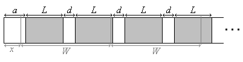
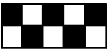
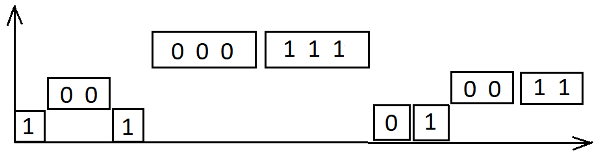

Последовательности и множества#
Задача “Фрукты и овощи”#
Задача с турнира CODE Work Challenge 2025
На прямоугольном поле размера \(N\) строк на \(M\) столбцов выращиваются фрукты и овощи разных типов. В ячейке \((i, j)\) выращивается один тип плодов, обозначаемый числом \(a_{ij}\). Сколькими способами можно выбрать прямоугольник, во всех четырех углах которого выращиваются одинаковые плоды?
Наивный алгоритм#
Переберем четыре координаты углов прямоугольника \((x_1, y_1), (x_2, y_2)\), где \(x_1, x_2 \in \{1..M\}\), \(y_1, y_2 \in \{1..N\}\). Проверим для каждой четверки условие \(a_{x_1y_1} = a_{x_1y_2} = a_{x_2y_1} = a_{x_2y_2}\). Если оно выполнено, увеличить счетчик на 1. Вывести значение счетчика.
Временная сложность алгоритма составит \(O(N^2M^2)\), что слишком долго при ограничениях \(N, M \leq 500\).
Идея для оптимизации#
Попробуем сократить перебор. Будем перебирать сначала только пары чисел - координаты горизонтальных сторон прямоугольника \(y_1, y_2\). Для каждого возможного типа плодов \(z\) определим множество координат столбцов \(X_z\), в которых в строках \(y_1\) и \(y_2\) находятся одинаковые плоды:
\( X_z(y_1,y_2) = \{x \in \{1..M\} \colon a_{xy_1} = a_{xy_2} = z \}. \)
Пусть для типа плодов \(z\) таких хороших столбцов всего \(n_z\) штук, то есть \(|X_z| = n_z\). Значит, общее число способов построить прямоугольник из чисел \(z\) на строках \(y_1, y_2\) равно \(C_{n_z}^2 = \dfrac{n_z(n_z - 1)}{2}\). Теперь останется сложить \(\dfrac{n_z(n_z - 1)}{2}\), перебрав разные \(z\).
Оптимизированный алгоритм#
Общее число возможных значений \(z\) может достигать \(10^6\), поэтому перебирать \(z\) не нужно.
Вместо этого выделим в множестве столбцов \(\{1..M\}\) подмножества \(X_z\). Для этого предварительно упорядочим элементы каждой строки, добавив к каждому числу \(a_{ij}\) дополнительные данные - номер столбца \(i\). Тогда, имея пару строк \(y_1, y_2\), можно выделить множества \(X_z(y_1,y_2)\) с помощью метода двух указателей.
Временная сложность алгоритма составит \(O(NM\log M + N^2M)\).
Дольше, но проще#
Существует более простой способ выделить множества \(X_z(y_1, y_2)\). Но для этого потребуется сортировка порядка \(M\) чисел \(N(N-1)/2\) раз (для каждой пары строк \(y_1, y_2\)).
После выбора \(y_1, y_2\) найдем множество интересующих столбцов
\( X(y_1,y_2) = \{x \in \{1..M\} \colon a_{xy_1} = a_{xy_2} \}. \)
Упорядочим числа \(a_{xy_1}\), где \(x \in X(y_1, y_2)\) по возрастанию и посчитаем классы эквивалентности, сложив \(n(n-1)/2\), где \(n\) - число повторяющихся чисел.
Временная сложность алгоритма составит \(O(N^2M\log M)\). В связи с этим на языке Python такое решение вряд ли пройдет во времени.
Метод двух указателей#
Поставим задачу вычисления пересечения двух множеств, заданных упорядоченными списками своих элементов. Точнее, для двух множеств
где \(a_1 < a_2 < \ldots < a_n\) и \(b_1 < b_2 < \ldots < b_m\), нужно вычислить множество \(A \cap B\), состоящее из их общих элементов.
Заведем два курсора - это переменные \(p, q\), содержащие индексы элементов списков \(a\) и \(b\). Инициализируем их значениями \(p = 1\), \(q = 1\), инициализируем промежуточный результат пустым списком. Поддерживаем логический инвариант: промежуточный результат равен пересечению множеств \(a[1..p-1] \cap b[1..q-1]\). Итерационный шаг:
если \(a[p] < b[q]\), увеличиваем \(p\) на 1: \(p \leftarrow p + 1\);
если \(a[p] > b[q]\), увеличиваем \(q\) на 1: \(q \leftarrow q + 1\);
если \(a[p] = b[q]\), добавим это число к результату и увеличим \(p\) и \(q\) на 1: \(c.append(a[p])\); \(p \leftarrow p + 1\); \(q \leftarrow q + 1\).
Во всех трех случаях инвариант сохраняется.
Замечание. Описанный метод пригоден для пересечения не только числовых множеств. Главное, чтобы на множестве значений типа данных был задан линейный порядок (рефлексивное, антисимметричное и транзитивное бинарное отношение, такое, что между любой парой элементов множества можно установить соответствие). Так, в задаче “Фрукты и овощи” типом элементов списков будет множество кортежей длины 2, упорядоченное лексикографически.
Упражнение. Примените метод двух указателей для вычисления объединения двух множеств, заданных упорядоченными списками своих элементов (аналог задачи слияния двух упорядоченных массивов).
Задача “Нарезка фантиков”#
Задача с турнира Школьники ACM 2009
Для производства конфетных фантиков изготовлена длинная узкая лента с напечатанными на ней картинками. Длина каждой картинки - \(L\) мм, расстояние между двумя соседними картинками - \(d\) мм, расстояние от начала ленты до первой картинки - \(a\) мм.
Нужно получить \(N\) фантиков длиной \(W\) мм каждый. Аппарат по производству фантиков работает так: сперва от начала ленты отрезается и выбрасывается кусок длиной \(x\) мм. Затем от начала ленты один за другим отрезаются фантики длиной \(W\) мм каждый.
Каким должно быть \(x\), чтобы на каждом фантике была целиком расположена ровно одна картинка? Картинки, попадающие на фантик только частично, не считаются.

Формализация задачи#
Это задача “на реализацию”, решается перебором возможных ответов.
Для каждого \(x\) определим \(N\) предикатов \(P_i(x) = \) “на \(i\)-м фантике целиком расположена ровно одна картинка” (\(i = 1..N\)). Требуется найти любое \(x\), для которого истинно условие \(\forall i\, P_i(x)\).
Чтобы выразить предикат \(P_i(x)\), заметим, что число картинок, целиком расположенных на фантике, зависит от расстояния от начала фантика до ближайшей картинки. Обозначим расстояние от начала \(i\)-го фантика до ближайшей картинки через \(r_i(x)\). Тогда \(P_i(x) = (r_i(x) + L \leq W) \,\&\, (r_i(x) + 2L + d > W)\).
Для первого фантика \(r_1(x) = \begin{cases}a-x, & \text{ если }x \leq a,\\ a-x + L + d, & \text{ если }x > a\end{cases}\)
Координата начала картинки, ближайшей к началу \(1\)-го фантика, при переходе к следующему фантику сдвинется на \(W\) мм влево. При этом картинки повторяются с периодом \(L + d\) мм. Поэтому \(r_2(x) = (r_1(x) - W) \bmod (L + d)\). Важно отметить, что вычисление остатка от деления отрицательного числа на положительное в языках программирования может отличаться от математического определения.
Вообще,
\(r_1(x) = (a - x) \bmod (L + d)\),
\(r_{i+1}(x) = (r_i(x) - W) \bmod (L + d)\), \(i = 1, 2, \ldots\)
Алгоритм#
Определим функцию для вычисления \(r_1(x), r_2(x), \ldots, r_N(x)\).
def calc_r(x):
r = [None] * (N + 1) # индексация с 1
r[1] = my_mod(a - x, L + d)
for i in range(1, N):
r[i + 1] = my_mod(r[i] - W, L + d)
return r
Определим функцию для вычисления \(P_1(x), P_2(x), \ldots, P_N(x)\).
def calc_P(x):
P = [None] * (N + 1) # индексация с 1
r = calc_r(x)
for i in range(1, N + 1):
P[i] = (r[i] + L <= W) and (r[i] + 2 * L + d > W)
return P
Тогда ответ для выбранного \(x\) вычисляется следующим образом.
def is_proper(x):
P = calc_P(x)
return all(P[1:])
Остается реализовать функцию my_mod(a, b) для вычисления остатка от деления целого числа \(a\) на натуральное число \(b\).
Задача “Различные номера”#
Задача с чемпионата RuCode.СТАРТ 2024
Одна телефонная компания в сотрудничестве с сетью автосалонов начала акцию. При регистрации нового автомобиля владельцу предоставляется номер телефона, похожий на номер автомобиля.
Номерной знак имеет вид lDDDll-DDD, где l - место для буквы латинского алфавита из подмножества A, B, C, E, H, K, M, O, P, T, X, Y, а D - место для цифры от 0 до 9.
Все цифры в телефонном номере соответствуют цифрам в номере автомобиля. Буквам соответствуют цифры, которых нет в номере автомобиля, при этом одинаковым буквам соответствуют одинаковые цифры, а разным - разные.
Например, если у автомобиля номер A451HA-077, то телефонный номер может выглядеть как
9245192077 (A заменили двойкой, H — девяткой), или как 9345123077 (тройкой и двойкой соответственно):
A451HA077
9245192077
9345123077
Но соответствующий этому номерному знаку телефонный номер не может выглядеть, например, как 9245172077 (так как семёрка и заменяет H, и встречается в номере как цифра), или как
9245122077 (так как двойка заменяет и H, и A), или как 9245136077 (так как буква A заменена в
одном случае двойкой, а в другой тройкой.
При этом, как можно заметить, одному автомобильному номеру может соответствовать несколько телефонных номеров. Вам дано целое число \(x\), определите, существует ли автомобильный номер, который имеет ровно \(x\) различных телефонных номеров, соответствующих ему (то есть что \(x + 1\) различный номер уже поставить в соответствие нельзя), и, если существует, выведите лексикографически наименьший такой номер.
Формализация задачи#
Дано соответствие \(R\) между множеством а/м номеров и множеством телефонных номеров. Пускай \(xRy\), если а/м номеру \(x\) соответствует телефонный номер \(y\).
Требуется выяснить мощности образов разных а/м номеров \(x\), т.е. \(|R(x)|\).
Решение#
Разобьём все автомобильные номера на 6 непересекающихся множеств \(N_k\) по числу элементов в множестве \(A\), \(|A| = k \in \{1..6\}\), где \(A\) - множество цифр, встречающихся в автомобильном номере.
Введём также множества \(B_1, B_2, B_3\) таким образом:
\(B_1 = \{\text{а/м номера }x\colon \text{все 3 буквы одинаковые}\}\)
\(B_2 = \{\text{а/м номера }x\colon \text{две буквы повторяются}\}\)
\(B_3 = \{\text{а/м номера }x\colon \text{все 3 буквы различны}\}\)
Итак, всё множество номеров разбивается на \(18 = 6 \cdot 3\) подмножеств вида \(N_k \cap B_j\), где \(k \in \{1..6\}, j \in \{1..3\}\). В рамках любого из этих подмножеств мощность образа \(|R(x)|\) у всех номеров \(x\) одна и та же.
\(x \in N_k \cap B_1 \; \Rightarrow \; |R(x)| = A_{10-k}^1 = 10 - k\)
\(x \in N_k \cap B_2 \; \Rightarrow \; |R(x)| = A_{10-k}^2 = (10 - k)(9 - k)\)
\(x \in N_k \cap B_3 \; \Rightarrow \; |R(x)| = A_{10-k}^3 = (10 - k)(9 - k)(8 - k)\)
Остаётся указать для каждой пары \((k, j)\), \(k \in \{1..6\}\), \(j \in \{1..3\}\), лексикографически наименьший автомобильный номер, принадлежащий множеству \(N_k \cap B_j\).
Задача “Уникальные отрезки”#
Источник: Асанов и др. - Комбинаторные алгоритмы
Дан набор из \(n\) отрезков, заданных своими концами \(s_k\) и \(f_k\). Все числа целые. Отрезки, не содержащие в себе никакие другие отрезки, назовем уникальными. Предложите эффективный алгоритм, определяющий все уникальные отрезки.
Формализация задачи#
Даны отрезки \(\{I_k = [s_k, f_k] \colon k = 1..n\}\). На множестве отрезков \(I_1, I_2, \ldots, I_n\) определено отношение \(R(I_i, I_j) = \) “отрезок \(I_i\) содержит в себе отрезок \(I_j\), т.е. \(I_j \subseteq I_i\)”.
Требуется найти множество истинности предиката \(P(i) = \) “отрезок \(I_i\) уникальный” = \(\neg \exists j \neq i \colon R(I_i, I_j)\).
Решение#
Наивный (переборный) алгоритм требует \(O(n^2)\) времени.
Для разработки быстрого алгоритма со сложностью \(O(n \log n)\) применим метод сканирующей прямой (с координатой \(x\)). Будем поддерживать структуру данных типа “динамическое множество”, в которой храним отрезки с началом \(s_k \leq x\) и концом \(f_k \geq x\).
При движении сканирующей прямой вправо динамическое множество модифицируется за счет добавления и извлечения отрезков. Для этого из множества извлекаются отрезки, для которых \(f_k < x\), и добавляются отрезки, для которых \(s_k \leq x\).
Опишем алгоритм на псевдокоде.
\(R \leftarrow \{I_k \colon k=1..n\}\) # множество уникальных отрезков
\(J \leftarrow \varnothing\) # динамическое множество
for \(x \leftarrow\) все числа из множества \(\{s_k\} \cup \{f_k\}\) в порядке возрастания:
# \(x\) - прежнее значение, \(x'\) - текущее значение
извлечь из \(J\) все \(I_k \colon f_k = x\)
добавить в \(J\) все \(I_k \colon s_k = x'\)
\(m \leftarrow \min \{f_j \colon s_j = x'\}\)
# теперь \(\exists j \colon (s_j = x' \,\&\, f_j \geq m)\)
# поэтому все отрезки из \(J\), которые заканчиваются позже \(m\), не уникальны
for всех \(I_k \in J \cap \{I_k \colon f_k \geq m\}\):
# отметить отрезок \(I_k\) не уникальным
\(R \leftarrow R \setminus \{I_k\}\)
# извлечь отрезок \(I_k\) из динамического множества
\(J \leftarrow J \setminus \{I_k\}\)
Идея алгоритма в том, чтобы по мере сканирования отрезков вертикальной прямой смотреть, для каких отрезков, которые начинаются прямо сейчас, найдётся один из уже начавшихся, но ещё не закончившихся отрезков. Все такие отрезки содержат в себе другой отрезок, а потому не уникальны.
Задача “Просто посчитать”#
Задача с тренировки клуба алгоритмического программирования (весна 2026)
Сколько раз такой шаблон встречается на шахматной доске размера \(N\) строк на \(M\) столбцов, левый верхний угол которой может быть чёрным (\(c = 0\)) либо белым (\(c = 1\))?

Даны числа \(N, M, c\), требуется найти число способов приложить такой трафарет к какой-нибудь клетке шахматной доски так, чтобы цвета совпали.
Решение#
Первый способ (годится для небольших \(N, M\)) - простой пересчёт.
Определим на множестве клеток шахматной доски \(A = \{(x, y) \colon x \in 1..M, \, y \in 1..N\}\) вспомогательный предикат \(B(x, y) = \) “клетка \((x, y)\) чёрного цвета”.
Также определим на множестве \(A\) предикат \(R(x, y) = \) “к клетке \((x, y)\) можно приложить трафарет”.
Справедлива формула \(R(x, y) = B(x, y) \,\&\, (x + 4 \leq M) \,\&\, (y + 1 \leq N)\).
Остаётся просто перебрать все \((x, y) \in A\) и пересчитать число элементов в множестве \(\{(x, y) \in A \colon R(x, y)\}\).
Второй способ (работает за \(O(1)\), годится для очень больших \(N, M\)) - вывод формулы для \(|\{(x, y) \in A \colon R(x, y)\}|\).
Заметим, что область истинности предиката \(R\) - это множество чёрных клеток в прямоугольнике с шириной \(w = M - 4\) и высотой \(h = N - 1\).
Чтобы вычислить число чёрных клеток в прямоугольнике \(w \times h\), подсчитаем отдельно клетки в нечётных строках и клетки в чётных строках. Всего нечётных строк \(\lceil \frac{h}{2} \rceil\), в каждой из них \(\lceil \frac{w}{2} \rceil\) чёрных клеток. Так что число чёрных клеток в нечётных строках равно \(\lceil \frac{h}{2} \rceil \cdot \lceil \frac{w}{2} \rceil\). Аналогично вычисляется число чёрных клеток в чётных строках. (Это в случае \(c = 0\); случай \(c = 1\) следует также рассмотреть отдельно.)
Задача “Генерируем красивые строки”#
Задача с онлайн-тура чемпионата RuCode 2026
Пусть \(k\) - натуральное число. Среди всех двоичных строк \(\mathbb{B}^*\) выделим множество красивых строк - это строки \(s\), обладающие свойствами: а) длина больше \(k\): \(|s| > k\); б) \(s\) состоит из чередующихся блоков длины \(k\).
Например, при \(k = 1\) строка 001 не является красивой, а 0101 — является, при \(k = 2\) строки
11, 01100 и 00111100 не являются красивыми (в первой длина строки равна \(k\), во второй первый
блок неполный, а в третьей второй и третий блок являются соседними, но оба состоят из единиц),
а строки 0011 или 11001100 — являются.
Вам дана двоичная строка, в которой есть хотя бы одна пара различных цифр. За одну операцию
вы можете удалить любой символ из этой строки (при этом порядок остальных символов останется
неизменным, то есть, например, при удалении второго слева символа из строки 11010 получится
строка 1010). Требуется удалить наименьшее количество символов так, чтобы строка стала красивой,
и вывести длину получившейся в итоге красивой строки и наименьшее возможное значение \(k\) для
такой строки.
Решение#
Представим блоки, из которых состоит заданная строка \(s\), в виде диаграммы. Вертикальная ось обозначает значение параметра \(k\). По горизонтали располагаются блоки, сгруппированные по длине.
На рисунке показан пример диаграммы для строки 1001000111010011.

Определим функцию \(f(k) = \) “минимальное количество удаленных символов, чтобы строка стала \(k\)-красивой”.
Опишем процедуру вычисления \(f(k)\) при заданном \(k\). Во-первых, все блоки длины больше \(k\) следует укоротить до длины \(k\). Во-вторых, из полученной последовательности блоков длины \(k\) необходимо выделить наибольшую чередующуюся подпоследовательность, а остальные символы удаляются.
Следовательно, \(f(k) = (z_{k+1} + 2z_{k+2} + 3z_{k+3} + \ldots) + k \cdot m\).
Здесь \(z_i\) - это количество блоков длины \(i\); \(m\) - количество удаленных блоков (длины не меньше \(k\)). На диаграмме рассматриваемые блоки будут находиться выше прямой с ординатой \(k\).
Если \(z_i\) вычислить нетрудно, то для вычисления \(m\) придется попотеть.
Рассмотрим двоичную строку \(t\), в которой каждый символ соответствует блоку исходной строки. Как найти минимальное число символов, которое надо удалить из этой строки, чтобы в строке не осталось одинаковых символов, стоящих рядом? Достаточно просто посчитать число блоков в этой строке.
Итак, если у нас есть строка \(s\), состоящая из блоков длины \(k\), мы можем просто объединить блоки в блоки и посчитать их количество - это и будет число \(m\). Теперь мы знаем, как посчитать \(f(k)\) за время \(O(n)\), где \(n\) - длина строки: \(n = |s|\). Значит, у нас есть алгоритм вычисления оптимального \(k\), работающий за время \(O(n^2)\).
Для полного решения задачи этого недостаточно, так как \(n\) может достигать \(10^6\). Подумаем, как оптимизировать вычисление \(m\) при разных \(k\).
Первый способ. Будем поддерживать два множества: множество \(A_0\) координат блоков из нулей и множество \(A_1\) координат блоков из единиц. Присвоим сначала \(k\) максимальное значение. Поддерживаем структуру данных “упорядоченное множество”. Спуская прямую на диаграмме, добавляем новые элементы в множество.
Далее просматриваем все добавленные элементы (соответствующие блокам длины \(k\)). Для каждого блока с координатой \(x\) осуществляем поиск в множествах \(A_0\), \(A_1\) максимального элемента, не превосходящего заданного \(x\), и минимального элемента, не меньшего \(x\). Все блоки из множеств \(A_0\), \(A_1\) потребуется помечать как видимые либо скрытые. Скрытые блоки для этого можно хранить в отдельных упорядоченных множествах \(A_0'\), \(A_1'\).
Если предшествующий среди всех видимых блоков состоит из других цифр, то делаем текущий блок видимым, иначе он будет скрыт. Если текущий блок видимый, а последующий блок скрыт и состоит из других цифр, то делаем его видимым. Подсчитав количество скрытых блоков, найдем число \(m\).
Сложность алгоритма составит \(O(n\log n)\).
Второй способ. Зафиксируем конкретное значение \(k\). Просматриваем всю строку \(s\) слева направо. Пусть \(x\) - текущая позиция в строке, причем \(s[x] \neq s[x-1]\). Находим минимальную позицию \(j\) в строке \(s\), такую, что \(j \geq x\) и количество символов от \(x\) до \(j\), равных \(s[x]\), равно \(k\). Затем присваиваем \(x\) число \(j\) и находим новое \(x'\), для которого \(x' \geq x\) и \(s[x'] \neq s[x'-1]\). Прибавляем к числу \(m\) число \(j-x+1-k\), эти символы не равны \(s[x]\), поэтому их нужно удалить.
Для конкретного \(k\) процедура займет \(\dfrac{n}{k}\log n\) действий.
Поэтому для всех \(k\) потребуется \(O\left(n\log n(1 + 1/2 + 1/3 + \ldots)\right) = O(n\log^2 n)\) действий.
Второй способ проще в реализации, поэтому предпочтительнее.